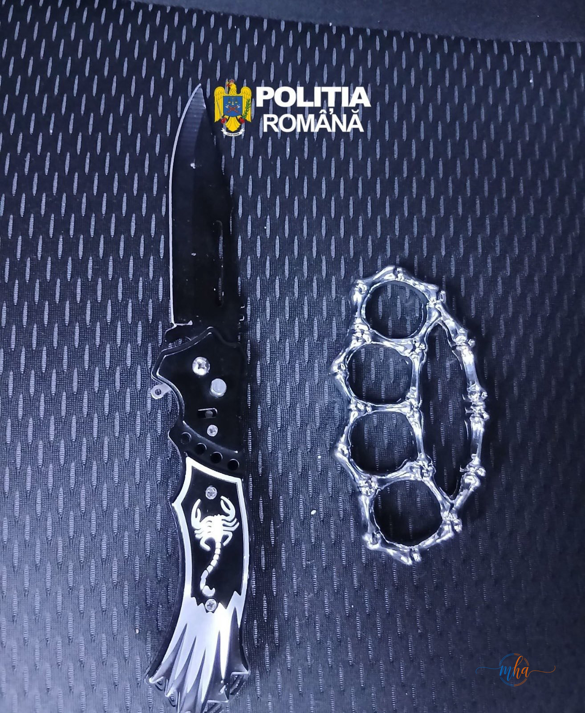

- Data: 25 aprilie 2026, în timpul Zilelor Severinului
- Ora 19:10 — doi tineri de 19 și 20 de ani, din Devesel, depistați în parcarea centrului comercial
- Găsite asupra lor: pumnal metalic tip box + briceag cu lamă de 10 cm
- Ora 21:30 — minor de 16 ani, din județul Gorj, cu pumnal tip box de 11 cm
- Toți conduși la sediul Poliției, obiecte confiscate
- Dosar penal deschis: port sau folosirea fără drept de obiecte periculoase
Zilele Severinului au adus, ca de fiecare dată, muzică, voie bună și mii de participanți veniți să celebreze orașul. Însă printre spectatori s-au strecurat și câțiva tineri care, în mod evident, veniseră pregătiți pentru cu totul alt scenariu decât un festival.
Polițiștii de investigații criminale din cadrul IPJ Mehedinți, împreună cu jandarmii Grupării Mobile Craiova, au desfășurat acțiuni de ordine și siguranță publică în zona evenimentelor, vigilența lor dovedind că forțele de ordine nu au lăsat garda jos nici o clipă în timpul sărbătorilor.
Ora 19:10 — doi tineri din Devesel, cu box și briceag în buzunar
Pe 25 aprilie, în jurul orei 19:10, oamenii legii au depistat în parcarea centrului comercial din Drobeta-Turnu Severin doi tineri de 19 și 20 de ani, din Devesel. Controlul corporal a scos la iveală că cei doi nu veniseră doar cu chef de distracție: aveau asupra lor un pumnal metalic de tip box și un briceag cu lamă de 10 centimetri.
Ambele obiecte sunt interzise prin lege în spațiile publice. Cei doi tineri au fost conduși la sediul Poliției pentru continuarea cercetărilor, iar „recuzita" a fost confiscată. Pe numele lor a fost deschis dosar penal pentru port sau folosirea fără drept de obiecte periculoase.

Ora 21:30 — un minor de 16 ani, din Gorj, cu un alt box de 11 cm
Seara nu s-a încheiat fără un nou episod. La ora 21:30, oamenii legii au depistat un minor de 16 ani, din județul Gorj, care, în loc de suveniruri de la eveniment, purta asupra sa tot un pumnal de tip box, cu lamă de 11 centimetri. Și acesta a fost condus la sediul Poliției, iar obiectul a fost confiscat.
și cercetate
deschise
confiscate
Intervenție promptă — ordinea publică, menținută
În timp ce majoritatea participanților au venit pentru muzică, relaxare și socializare, alții au confundat, cel mai probabil, atmosfera de festival cu un decor de film de acțiune. Din fericire, intervenția promptă a forțelor de ordine a readus lucrurile în registrul normal, acolo unde distracția nu are nevoie de „accesorii" periculoase.
— IPJ Mehedinți
Prezența masivă a polițiștilor și jandarmilor la Zilele Severinului a demonstrat că evenimentele publice de amploare din județul Mehedinți sunt monitorizate și asigurate corespunzător. Colaborarea dintre IPJ Mehedinți și Gruparea Mobilă de Jandarmi Craiova a permis o intervenție rapidă și eficientă, prevenind orice incident grav.
- Infracțiunea de port sau folosire fără drept de obiecte periculoase — Codul Penal art. 372
- Pedeapsa: închisoare de la 3 luni la 1 an sau amendă penală
- Sunt interzise în spațiile publice: cuțite cu lamă peste 6 cm, boxuri metalice, arme albe de orice tip
- Minorilor li se aplică măsuri educative, dar fapta rămâne în evidența penală
- Obiectele confiscate nu se restituie
Autoritățile transmit un mesaj ferm: evenimentele publice din județul Mehedinți sunt zone de siguranță, nu de intimidare. Prezența forțelor de ordine este garantată la orice manifestare de amploare, iar cei care aleg să ignore legea vor suporta consecințele.